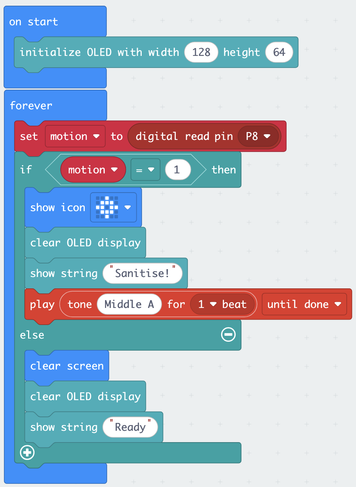
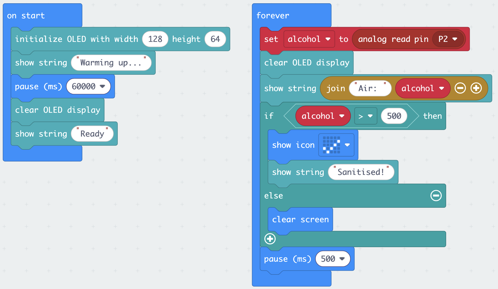

Bonus Exercises
These two exercises are optional. During the lab on 16 June, only start one if your team finishes Exercise 4 before ~15:25 — pick one, don’t try both, and switch to the mini challenge in good time. They also work as standalone references for project day: the PIR and MQ3 are both strong candidates for project ideas.
Exercise 5 (optional): Motion-triggered alert
Scenario
A clinic wants to monitor a hand-hygiene station at the ward entrance. When someone approaches, the device should alert them to use the hand sanitiser before entering. When nobody is present, the device should be ready and silent.
What you will build
- PIR sensor monitors for movement continuously
- Motion detected → LED matrix shows an alert icon + tone plays + OLED shows
"Sanitise!" - No motion → OLED shows
"Ready", LED matrix is clear
Hardware
Connect the PIR sensor to the Sensorbit port labelled P8.
The PIR needs 30–60 seconds to settle after power-on. Ignore its output until then — early readings are not your fault and not a wiring error.
Building the program
Start a new project (motion-alert). Add the Elecfreaks extension.
Step 1 — Initialise the OLED in on start
Same as before: initialize OLED width 128 height 64.
Step 2 — Read the PIR sensor
The PIR is a simple digital sensor, read exactly like the crash sensor in Exercise 2: it outputs 1 when motion is detected and 0 when it is not.
- In
forever, from Variables, create a variable calledmotion - From the toolbox Advanced → Pins, drag a
digital read pin P8block - Set
motionto the result of that pin read
Step 3 — Respond with a conditional
- From Logic, add an
if / then / elseblock - Condition:
motion = 1 - In the
ifbranch (motion detected):- From Basic,
show icon— pick an arrow, exclamation, or similar - From OLED,
clear OLED display, thenshow string "Sanitise!" - From Music,
play tone Middle A for 1 beat(or any tone you like)
- From Basic,
- In the
elsebranch (no motion):- From Basic,
clear screen - From OLED,
clear OLED display, thenshow string "Ready"
- From Basic,
Step 4 — Download and test

if branch — pick one your team likes.Flash the program. Wave your hand slowly in front of the PIR dome. The alert should trigger; when you stop moving, the device should return to "Ready" within a few seconds.
The PIR detects movement of warm bodies — not presence. A person standing still directly in front of it will not trigger it after a few seconds. This is by design (it avoids false positives from warm but stationary objects), but it matters for your application.
Your forever loop clears and rewrites the OLED on every single pass — many times per second — even when nothing has changed. Each clear-and-rewrite is visible as a flicker.
The fix is to only redraw the screen when the state actually changes: keep a second variable (e.g. lastMotion) holding the previous reading, and only clear and rewrite the OLED when motion differs from lastMotion. At the end of the loop, set lastMotion to motion.
This previous-vs-current pattern is the same one the extension challenge below uses to count entries — solve one and you have solved both.
- LED matrix shows an icon when you wave in front of the PIR
- OLED switches between
"Ready"and"Sanitise!" - A tone plays on detection
let motion = 0
OLED.init(128, 64)
basic.forever(function () {
motion = pins.digitalReadPin(DigitalPin.P8)
if (motion == 1) {
basic.showIcon(IconNames.Target)
OLED.clear()
OLED.writeStringNewLine("Sanitise!")
music.play(music.tonePlayable(440, music.beat(BeatFraction.Whole)), music.PlaybackMode.UntilDone)
} else {
basic.clearScreen()
OLED.clear()
OLED.writeStringNewLine("Ready")
}
})Discussion — limitations of a PIR for this application
Think through these questions as a team:
- Someone approaches the station, uses the sanitiser, then stands at the entrance talking to a colleague for 30 seconds. Does the device behave as intended?
- A window is open and sunlight moves across the floor near the sensor. Could this trigger the alert?
- Can the PIR tell the difference between a person and a large dog walking past?
Note one limitation that would matter in a real deployment. This will appear in the Canvas quiz.
Extension challenge
Count entries. Every time the PIR detects a new motion event — a transition from 0 to 1, not just a sustained 1 — increment a variable called entries. Display the count on the OLED alongside the status text. Reset the count when Button A is pressed.
You need to track the previous state of the PIR as well as the current state. Only increment entries when the previous reading was 0 and the current reading is 1 — this counts the moment of arrival, not every frame of the forever loop during which someone is present.
Add an on button A pressed block in the workspace (separate from forever) that sets entries back to 0 — the same event-plus-polling combination as the latching call button in Exercise 2.
Exercise 6 (optional): Sanitiser-use detector
Scenario
A clinic asks every visitor to sanitise their hands at the entrance. But did they actually do it? Alcohol-based hand sanitiser releases alcohol vapour as it evaporates — and the MQ3 sensor can detect it. You will build a device that confirms sanitiser was actually used.
What you will build
- MQ3 alcohol sensor read continuously
- Raw value shown on the OLED
- When alcohol vapour is detected: LED matrix shows a tick, OLED shows
"Sanitised!"
The MQ3 contains a heating element and becomes noticeably warm during use. This is by design, not a fault.
Any alcohol source works: an alcohol swab, surface disinfectant, or ethanol from the lab. Hold it a few centimetres from the sensor’s metal mesh. If you have no alcohol source at all, you can still build the program and observe the baseline behaviour and warm-up effect.
Hardware
Connect the MQ3 sensor to the Sensorbit port labelled P2. Remember: G to G, V to V, S to S. (The MQ3 is analog, and only some pins can read analog signals — P1 and P2 are the easiest choices on the Sensorbit.)
Building the program
Start a new project (sanitiser-check). Add the Elecfreaks extension.
Step 1 — Handle the warm-up in on start
Lecture 3 told you the MQ3 needs about 60 seconds of warm-up before its readings mean anything. Your program should say so, instead of showing garbage values:
- Initialise the OLED:
initialize OLED width 128 height 64 - From OLED,
show string "Warming up..."on the OLED - From Basic, add
pause (ms)set to 60000 - Clear the OLED and show
"Ready"
Step 2 — Read the MQ3 in forever
The MQ3 is an analog sensor — no special extension block needed.
- Create a variable called
alcohol - From Advanced → Pins, set
alcoholtoanalog read pin P2 - Clear the OLED and display the value:
"Air: "joined toalcohol - Add a
pause (ms)of 500 at the end of the loop so the display is readable
Step 3 — Discover your threshold
Flash the program and wait out the warm-up. Then (Documenter: record these below):
- Note the baseline reading in normal air
- Apply sanitiser to your hands (or open your alcohol source) and hold them near the sensor — note the peak reading
- Move away and watch how long the value takes to fall back
Pick a threshold roughly halfway between baseline and peak.
| Observation | Raw value |
|---|---|
| Baseline (normal air) | |
| Peak (alcohol vapour) | |
| Your threshold |
Step 4 — Detect sanitiser use
Add an if / then / else after the read:
if alcohol > [your threshold]:
show tick icon on LED matrix
OLED shows "Sanitised!"
else:
clear LED matrixStep 5 — Download and test

on start, detection in forever. The threshold (500) is an example — use a value roughly halfway between your baseline and peak.Flash, wait for warm-up, then test: the tick should appear when sanitised hands approach the sensor and disappear after the vapour clears.
- OLED shows
"Warming up..."for the first minute, then live readings - The reading rises clearly when alcohol vapour is present
- The tick appears above your threshold and clears below it
let alcohol = 0
OLED.init(128, 64)
OLED.writeStringNewLine("Warming up...")
basic.pause(60000)
OLED.clear()
OLED.writeStringNewLine("Ready")
basic.forever(function () {
alcohol = pins.analogReadPin(AnalogReadWritePin.P2)
OLED.clear()
OLED.writeStringNewLine("Air: " + alcohol)
if (alcohol > 500) {
basic.showIcon(IconNames.Yes)
OLED.writeStringNewLine("Sanitised!")
} else {
basic.clearScreen()
}
basic.pause(500)
})Replace 500 with the threshold you observed on your hardware.
Discussion — what is this device actually measuring?
- During the 60-second warm-up, what did the readings look like? What would happen in a real deployment if the device lost power and restarted — and nobody knew about the warm-up?
- The MQ3 responds to other volatile compounds too — cleaning chemicals, solvents, even some perfumes. Could this device produce false “Sanitised!” confirmations? Does that matter for this application?
- The reading is relative, not calibrated. Can this device tell how much sanitiser was used, or only that some alcohol vapour was present?